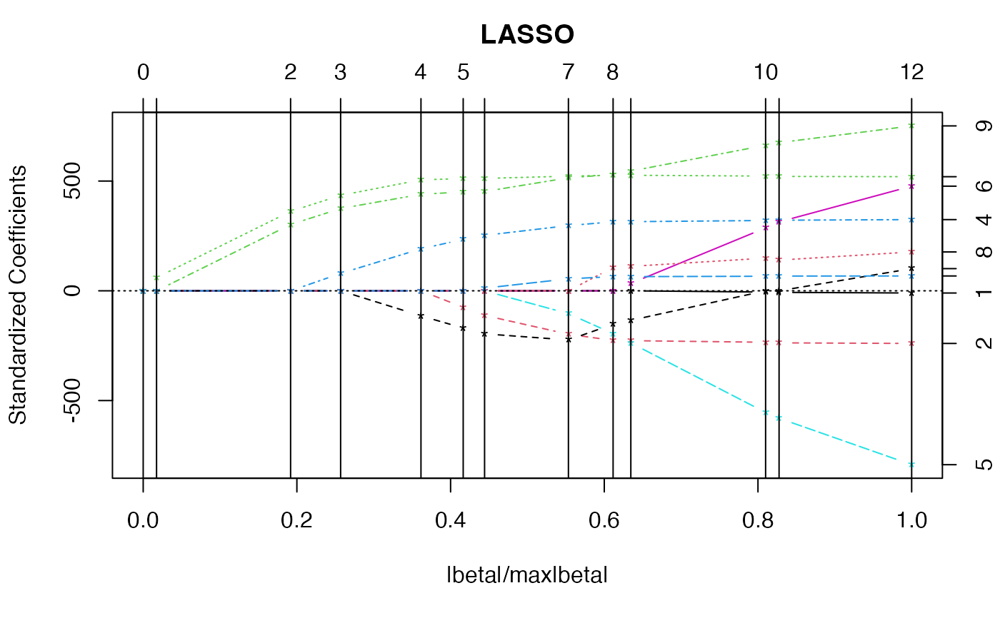
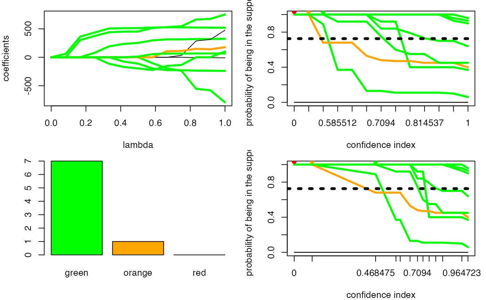

Plot trajectories.
trajC0(x, ...) # S3 method for selectboost trajC0(x, summary.selectboost.res, lasso.coef.path, type.x.axis = "noscale", type.graph = "boost", threshold.level = NULL, ...)
| x | Numerical matrix. Selectboost object. |
|---|---|
| ... | . Passed to the plotting functions. |
| summary.selectboost.res | List. Summary of selectboost object. |
| lasso.coef.path | List. Result of |
| type.x.axis | Character value. "scale" or "noscale" for the X axis. |
| type.graph | Character value. Type of graphs: "bars", "lasso" and "boost". |
| threshold.level | Numeric value. Threshold for the graphs. |
An invisible list.
invisible list.
trajC0 returns an invisible list and creates four graphics.
selectBoost: a general algorithm to enhance the performance of variable selection methods in correlated datasets, Ismaïl Aouadi, Nicolas Jung, Raphael Carapito, Laurent Vallat, Seiamak Bahram, Myriam Maumy-Bertrand, Frédéric Bertrand, https://arxiv.org/abs/1810.01670
fastboost, autoboost and summary.selectboost
Other Selectboost analyze functions: auto.analyze,
plot.summary.selectboost
data(autoboost.res.x) data(diabetes, package="lars") ### With lasso trajectories m.x<-lars::lars(diabetes$x,diabetes$y) plot(m.x)mm.x<-predict(m.x,type="coef",mode="lambda") autoboost.res.x.mean = summary(autoboost.res.x) par(mfrow=c(2,2),mar=c(4,4,1,1)) trajC0(autoboost.res.x,autoboost.res.x.mean,lasso.coef.path=mm.x,type.graph="lasso") trajC0(autoboost.res.x,autoboost.res.x.mean) trajC0(autoboost.res.x,autoboost.res.x.mean,type.graph="bars") trajC0(autoboost.res.x,autoboost.res.x.mean,type.x.axis ="scale")